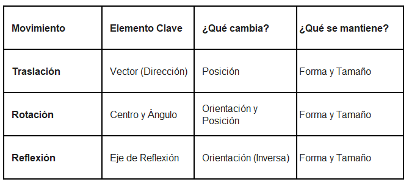

6°
EXPLORACIÓN
Imagina que estás diseñando los movimientos para un personaje o una ficha de un videojuego en un tablero cuadriculado. En el nivel anterior, aprendiste a deslizar la ficha de un lado a otro (hacia arriba, abajo, izquierda o derecha).
Pero ahora el juego se complica: hay obstáculos y paredes. Para avanzar, la ficha necesita hacer movimientos diferentes. Observa con atención lo que le ocurre a la ficha original en estos dos nuevos casos:
Simulador de Movimientos
Haz clic en los botones para ver qué le ocurre a la ficha azul.
Responde las siguientes preguntas en tu cuaderno, basándote únicamente en lo que ves en la imagen:
1. (★) Observa el Caso 1. La ficha no se deslizó, sino que dio una vuelta sobre una de sus esquinas, quedando "acostada". Menciona dos objetos de tu vida diaria que hagan este tipo de movimiento circular (dar vueltas sobre un punto fijo).
2. (★) Observa el Caso 2. La figura parece haberse volteado por completo, como si se estuviera mirando al espejo. Su lado más largo cambió de dirección. ¿En qué situaciones cotidianas ves este efecto de "reflejo"?
ANALIZA
Piensa en las características de la ficha después de realizar esos dos nuevos movimientos y contesta:
1. (★) Si mides con una regla los lados de la ficha original y luego mides los lados de las fichas en el Caso 1 y Caso 2, ¿crees que las medidas cambiaron al moverse? Explica tu respuesta.
2. (★) En el Caso 2 (el efecto espejo), ¿crees que podrías volver a la posición original simplemente "deslizando" la figura sin despegarla de la pantalla? Imagina el movimiento y describe qué pasaría.
3. Dibuja en tu cuaderno una flecha sencilla apuntando hacia arriba. Luego, dibuja cómo crees que se vería si da "media vuelta" y cómo se vería si la pones frente a un espejo al lado derecho.
CONOCE ALGO NUEVO
Las transformaciones que viste en la sección anterior se llaman Movimientos Rígidos. Se llaman así porque, aunque la figura cambie de posición o de orientación, su forma y su tamaño no cambian: los lados miden lo mismo y los ángulos son iguales. La figura original y la imagen final son congruentes.
A continuación, definiremos los dos movimientos que estudiaremos en esta guía:
1. La Rotación (El Giro)
Es un movimiento en el que todos los puntos de la figura giran alrededor de un punto fijo llamado Centro de Rotación.
Para que una rotación sea exacta, necesitamos tres datos:
- Centro de rotación: El punto donde se "clava" la figura para girar.
- Ángulo de giro: Qué tanto gira (por ejemplo, 90° es un cuarto de vuelta).
- Sentido: Si gira como las manecillas del reloj (horario) o al revés (antihorario).
La Rotación 🔄
La Reflexión 🪞
2. La Reflexión (El Espejo)
Es un movimiento que consiste en "voltear" la figura respecto a una línea recta llamada Eje de Reflexión.
Las características principales son:
- Cada punto de la figura original y su imagen están a la misma distancia del eje de reflexión.
- La figura reflejada parece estar invertida (como cuando ves tu mano derecha en el espejo y parece la izquierda).
Resumen para tu cuaderno (★)

ACTIVIDADES DE APRENDIZAJE
Ruta de trabajo: Sigue las instrucciones paso a paso. Recuerda que los ejercicios marcados con (★) son tu misión principal y obligatoria de hoy.
Nivel Esencial (★)
1. (★) Identificación visual: Observa la imagen proyectada en el tablero (o en tu guía) donde aparecen tres parejas de figuras (Pareja A, Pareja B y Pareja C). Escribe en tu cuaderno qué tipo de movimiento rígido (Traslación, Rotación o Reflexión) se aplicó en cada caso para pasar de la figura original a la imagen.
2. (★) Construcción de un reflejo: Dibuja en tu cuaderno, sobre la cuadrícula, un triángulo rectángulo sencillo. Traza una línea vertical recta a dos cuadritos de distancia de la figura. Esta línea será tu Eje de Reflexión. Ahora, dibuja el reflejo exacto del triángulo al otro lado de la línea. Pista: Cuenta los cuadritos desde cada vértice del triángulo original hasta la línea, y cuenta esa misma cantidad hacia el otro lado.
Nivel Intermedio
3. Rotación de 90°: Dibuja en tu cuadrícula la letra "L" mayúscula (que ocupe 3 cuadritos de alto y 2 de ancho). Marca el vértice inferior izquierdo con un punto rojo (este será el Centro de Rotación). Dibuja cómo quedaría la letra si le aplicas una rotación de 90° en sentido horario (como las manecillas del reloj) apoyándote en ese punto rojo.
Nivel de Profundización
4. Dibuja un cuadrado en tu cuaderno. ¿Es posible aplicar una rotación y una reflexión a ese cuadrado y que el resultado final se vea exactamente igual a la figura original? Explica tu razonamiento por escrito.
Evaluación Formativa: Movimientos Rígidos
Selecciona la respuesta correcta para cada pregunta y presiona "Comprobar". ¡Aprende de tus errores!
1. Al aplicar un movimiento rígido (como una rotación o una reflexión) a un polígono en el plano cartesiano, es correcto afirmar que:
2. (Contexto: Educación Vial). Una señal de "Giro a la izquierda" (flecha curva) debe colocarse en el carril contrario indicando "Giro a la derecha". Para diseñar la nueva señal sin cambiar su tamaño, el movimiento matemático exacto que se debe aplicar es:
REFERENCIAS BIBLIOGRÁFICAS
Ministerio de Educación Nacional. (2016). Vamos a aprender Matemáticas 6. Bogotá: MEN.
Godino, J. D., Batanero, C., & Font, V. (2003). Fundamentos de la enseñanza y el aprendizaje de las matemáticas. Granada: Universidad de Granada.
Ministerio de Educación Nacional. (2006). Estándares básicos de competencias en matemáticas. Bogotá: MEN.
Ministerio de Educación Nacional. (2016). Derechos básicos de aprendizaje: Matemáticas. Bogotá: MEN.